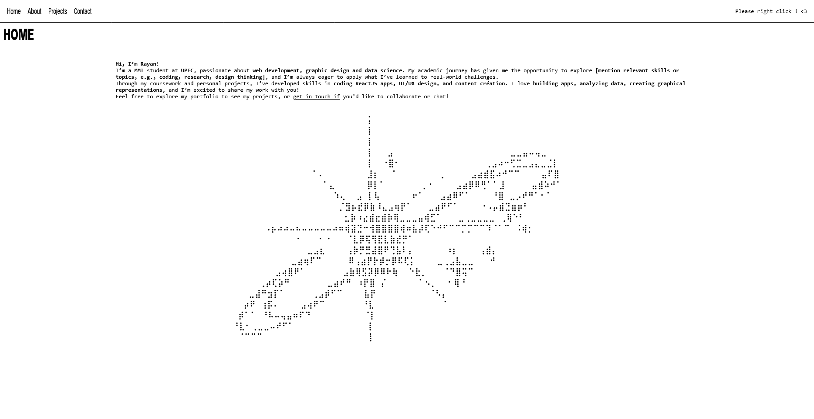

Portfolio Brutaliste
Un portfolio brut, authentique et épuré pensé pour mettre en avant mes compétences techniques et créatives à travers les codes du brutalisme web. Doté d'un menu contextuel personnalisé sur clic droit, de volets accordéons cinétiques, de performances web pures sans framework et d'un formulaire sans serveur sécurisé.

01 Le Concept Brutaliste & l'Identité Visuelle
Dans un écosystème saturé de templates standardisés et de frameworks surdimensionnés, ce portfolio s'affirme comme un parti pris de brutalisme digital.
Le design revendique un contraste monochrome radical, des bordures nettes et géométriques, une typographie de caractère (Cossette Titre + Monospace) et des transitions cinétiques soignées. Il capte l'attention et reflète un goût prononcé pour l'expérimentation frontend originale.
02 Interactions & Expérience Utilisateur
Au-delà de son minimalisme visuel, le site intègre des interactions singulières développées en JavaScript pur :
Menu Contextuel Clic Droit
Interception de l'événement contextmenu pour afficher un menu flottant brutaliste positionné précisément sous le curseur.
Sections Accordéon Cinétiques
Ouverture et fermeture fluide des sections en hauteur CSS, pilotées par la navigation, les ancres d'URL et les titres.
Web3Forms + hCaptcha
Intégration d'envoi de messages asynchrone sécurisée par captcha avec retours modaux instantanés.
Graphisme ASCII Art
Intégration d'art ASCII monochrome sur mesure rappelant l'univers hacker et les terminaux rétro.
03 Architecture Web Vanilla & Zéro Superflu
Garantir des temps de chargement instantanés et des scores SEO exemplaires en s'affranchissant de toute bibliothèque superflue :
04 Points Forts & Bilan
- Menu Clic Droit Interactif Une touche d'originalité remarquée qui engage les visiteurs et recruteurs curieux.
- Chargement Instantané Affichage immédiat et fluide, y compris sur les connexions réseau faibles.
- Navigation Accordéon Originale Structure modulaire permettant de parcourir l'ensemble du parcours sans dispersion.
05 Technologies Utilisées
- HTML5 Vanilla
- Animations & Grid CSS3
- JavaScript Natif (ES6+)
- API Web3Forms
- hCaptcha
- Netlify Edge CI/CD
- Git & GitHub
- Figma